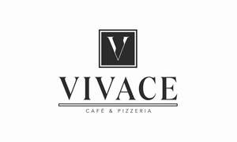

Trade Mark Journal No.2025/028 11 July 2025
UK00004190922 17 April 2025 (16,21,25,29,30,35,43)

- Class 16
- Cardboard pizza boxes; Packaging materials.
- Class 21
- Coffee mugs; Coffee scoops; Coffee grinders; Coffee pots; Coffee cups.
- Class 25
- Clothes; Clothing; Jackets [clothing]; Shorts [clothing]; Aprons [clothing].
- Class 29
- Burgers.
- Class 30
- Coffee; Coffee drinks; Cappuccino; Coffee based drinks; Iced coffee; Chocolate coffee; Coffee beverages; Beverages with coffee base; Beverages with a coffee base; Flavoured coffee; Coffee pods; Instant coffee; Coffee beans; Decaffeinated coffee; Coffee extracts for use as substitutes for coffee; Danish pastries; Bakery goods; Coffee flavourings; Coffee based beverages; Pizza; Pizzas; Gluten-free pizza; Pizza crust; Pizza dough; Pizza crusts; Pizza sauces; Pizza sauce; Frozen pizza; Fresh pizza; Pizza flour; Pizza spices; Frozen pizza crusts; Sauces for pizzas; Frozen pizzas; Fresh pizzas; Pizza bases; Chilled pizzas; Pizza mixes; Uncooked pizzas; Prepared pizza meals; Pre-baked pizzas crusts; Preserved pizzas; Frozen pizza crusts made of cauliflower; Gluten-free bakery products; Pizza dough mix; Pizzas [prepared]; Pasta for incorporating into pizzas; Pasta dishes; Truffle pasta; Pasta; Toasted cheese sandwich; Sandwich wraps [bread]; Sandwiches.
- Class 35
- Online ordering services in the field of restaurant take-out and delivery; On-line ordering services in the field of restaurant take-out and delivery; Business advice relating to restaurant franchising; Business management of restaurants; Restaurant management for others; Business management assistance in the establishment and operation of restaurants; Business assistance relating to starting and running a franchise; Administration of the business affairs of franchises; Provision of assistance [business] in the establishment of franchises; Assistance in business management within the framework of a franchise contract; Business assistance relating to the establishment of franchises; Provision of assistance [business] in the operation of franchises; Advice in the running of establishments as franchises; Assistance in product commercialization, within the framework of a franchise contract; Advisory services (Business -) relating to the establishment of franchises; Providing assistance in the field of business management within the framework of a franchise contract; Business advisory services relating to the establishment and operation of franchises; Advisory services (Business -) relating to the operation of franchises; Advisory services relating to the operation of franchises; Providing assistance in the field of product commercialization within the framework of a franchise contract; Assistance in franchised commercial business management; Business management assistance in the field of franchising; Business advisory services relating to franchising of a motor dealership; Business advertising services relating to franchising; Business management for a trade company and for a service company; Business assistance relating to franchising; Promoting services for baseball game; Business management of theaters; Franchising (Business advisory services relating to -); Business advisory services relating to franchising; Retail services in relation to games; Business management of an airline company; Business advice relating to franchising; Franchising (Business advice relating to -); Business management of retail outlets; Providing assistance in the management of franchised businesses; Business management advisory services relating to franchising; Business management of wholesale and retail outlets; Provision of business information relating to franchising; Business acquisitions; Franchising services providing business assistance; Provision of nominee company directors; Provision of business advice relating to franchising; Merchandising; Product merchandising.
- Class 43
- Cafe services; Café services; Cafés; Coffee shops; Serving food and drink in Internet cafes; Coffee shop services; Bar and restaurant services; Restaurant and bar services; Providing food and drink in Internet cafes; Bistro services; Take-away restaurant services; Salad bars [restaurant services]; Coffee bar services; Fast-food restaurant services; Take-out restaurant services; Restaurant services; Restaurants (Self-service -); Self-service restaurants; Providing food and drink in restaurants and bars; Providing food and drink in bistros; Restaurants; Restaurant services for the provision of fast food; Restaurant reservation services; Take-away food and drink services; Catering of food and drinks; Airport lounge services.
VIVACE CAFE & PIZZERIA LTD